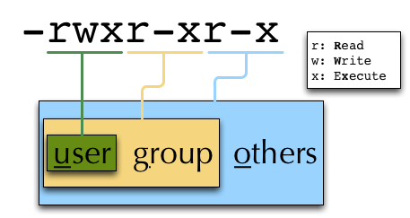

Introduction to the Linux Commandline
Why Use the Commandline
Absolute Paths / Relative Paths
A path describes the location of a file/folder in the filesystem: It is important to understand that there are basically two ways to describe such a path: Either by using an absolute pathname, or by using a relative pathname. The difference is that absolute paths always start with a "slash /". This "slash" denotes the so called "root" of the filesystem (see below). Relative paths in contrast always start with a directory name and denote the location of a file/folder relative to the current directory.
note
When in doubt, it's best to use absolute filenames. Commands given with absolute pathname are more easily repeated later, as they can be run regardless of the current working directory (unlike relative paths).
General Structure of Linux Commands
A Journey through Commandland
Getting Help
-h/--help option, no parameters
Many commands support a "help" option, either through -h or through --help. Other commands will show a help page or at least a short usage overview if you provide incorrect commandline options.
man - show the manual page of a command
Usage: man command or file
$ man echo
echo(1)
NAME
echo - display a line of text
SYNOPSIS
echo [SHORT-OPTION]... [STRING]...
echo LONG-OPTION
...
$
For the navigation within a manpage and how to exit the manpage, see the paragraph regarding less <less>.
note
The behaviour of man is dependent of the $PAGER environment variable.
apropos - list manpages containing a keyword in their description
Usage: apropos keyword
$ apropos who
...
who (1) - show who is logged on
who (1) - display who is on the system
whoami (1) - print effective userid
$
Use apropos to find candidates for specific tasks.
/usr/share/doc/
The /usr/share/doc/ directory in some Linux distributions contains additional documentation of installed software packages.
Who am I, where am I
whoami - Print your username
Linux is a multi-User Operating System supporting thousands of users on the same machine. As usernames can differ between machines, it's important to know your username on any particular machine.
Usage: whoami
$ whoami
fthommen
$
hostname - Print the name of the computer
Each machine on the network has a unique name which is used to distinguish one from another.
Usage: hostname
$ hostname
pc-teach01
$
pwd - Print the current working directory
A Linux filesystem contains countless directories with many subdirectories which makes it easy to get lost. It is good practice to check your position within the filesystem regularly.
Usage: pwd
$ pwd
/home/fthommen
$
date - Print current date and time
Usage: date
$ date
Tue Sep 25 19:57:50 CEST 2012
$
note
The command <time> time does something completely different from date and is not used to show the current time.
Moving Around
cd - Change the working directory
Usage: cd [new_directory]
$ pwd
/home/fthommen
$ cd /usr/bin
$ pwd
/usr/bin
$
note
Using cd without a directory is equivalent to "cd ~" and changes into the users's homedirectory
note
Please note the difference between absolute paths (starting with "/") and relative paths (starting with a directory name).
Special directories:
- "
.": The current working directory
- "
/": The root directory of this computer
- "
..": The parent directory of the current working directory
- "
~": Your homedirectory
$ pwd
/usr
$ cd /bin
$ pwd
/bin
$ pwd
/usr
$ cd
$ pwd
/home/fthommen
See What's Around
ls - List directory contents
- Usage:
ls [options] [file(s) or directory/ies]
$ ls
/home/fthommen
$ ls -l aa.pdf
-rw-r--r-- 1 fthommen cmueller 0 Sep 24 10:59 aa.pdf
$
Useful options:
-l Long listing with permissions, user, group and last modification date -1 Print listing in one column only -a Show all files (hidden, "." and "..") -A Show almost all files (hidden, but not "." and "..") -F Show filetypes (nothing = regular file, "/" = directory, "*" = executable file, "@" = symbolic link) -d Show directory information instead of directory content -t Sort listing by modification time (most recent on top)

Digression: Shell globs
Files and folders can't only be referred to with their full name, but also with so-called "Shell Globs", which are a kind of simple pattern to address groups of files and folders. Instead of explicit names you can use the following placeholders:
?: Any single character*: Any number of any character (including no character at all, but not matching a starting ".")[...]: One of the characters included in the brackets. Use "-" to define ranges of characters{word1,word2}: Each individual word is expanded
Examples:
*.pdf: All files having the extension ".pdf"?.jpg: Jpeg file consisting of only one character[0-9]*.txt: All files starting with a number and having the extension ".txt"*.???: All files having a three-character extensionphoto.{jpg,png}: "photo.jpg" and "photo.png"
note
The special directory "~" mentioned above is a shell glob, too.
Organize Files and Folders
touch - Create a file or change last modification date of an existing file
Usage: touch file(s) or directory/ies
$ ls afile
ls: afile: No such file or directory
$ touch afile
$ ls afile
afile
$
$ ls -l aa.pdf
-rw-r--r-- 1 fthommen cmueller 0 Sep 24 10:59 aa.pdf
$ touch aa.pdf
$ ls -l aa.pdf
-rw-r--r-- 1 fthommen cmueller 0 Sep 25 22:01 aa.pdf
$
cp - Copy files and folders
Usage: cp [options] sourcefile destinationfile
$ cp /usr/bin/less /tmp/backup_of_less
$
Useful options:
-r Copy recursively -i Interactive operation, ask before overwriting an existing file -p Preserve owner, permissions and timestamp
Examples:
If the last filename given is nonexisting then the first file is copied as this new filename:
$ cp /usr/bin/less /tmp/
$
Be careful! If the last filename given does exist, this file will be overwritten and replaced with a copy of the first file.
If the last filename given is an (existing!) directory, then the file is copied into this directory: :
$ cp /usr/bin/less /tmp/
$
This allows us to copy multiple files into the same directory at the same time: :
$ cp /usr/bin/less /usr/bin/grep /usr/bin/tail /tmp/
$
To recursively copy files, we need to specify the -r option. Here, we copy a set of exercise files from the network share into our home directory: :
$ cp -r /g/bio-it/courses/LSB ~/exercises
$
rsync - intelligently copying files and folders
Usage: rsync [options] source target
$ rsync -av /etc/ root@taperobot:/etc-backup
...
$
rsync allows you to copy files or folders locally or to wherever you have ssh access. You can have rsync copy only newer files or only older files. If copy operation is interrupted, you can rerun rsync and it will only copy the missing files (in contrast to cp which will just copy everything again).
source and target can be local directories or have the form user@remotehost:directory, in which case you'll have to give your password for the remote host. This latter version will copy over the network.
note
rsync is one of the few cases, where it effectively matters if a directory is written with an ending slash ("/") or nor: If the source is a directory and ends with a slash, then the content of this directory will be copied into the target directory. If the source doesn't have an ending slash, then a directory with the same name will be created within the target directory
Useful option combinations:
-av Verbosely copies all source files which are different (different size, different age) or missing from the source. Beware: This will also copy files which are older on the source side -au Silently copies all source files which are different (different size, different age) or missing from the source. This combination will not overwrite newer files by older ones
- This should not copy any new files, as we previously copied these already:
$ rsync -av /g/bio-it/courses/LSB/exercises/ ~/exercises/
$
rm - Remove files and directories
Usage:
rm [options] file(s)
rm -r [options] directory/ies
$ ls afile
afile
$ rm afile
$ ls afile
ls: afile: No such file or directory
$
Useful options:
-i Ask for confirmation of each removal -r Remove recursively -f Force the removal (no questions, no errors if a file doesn't exist)
note
rm without the -i option will usually not ask you if you really want to remove the file or directory
mv - Move and rename files and folders
Usage:
mv [options] sourcefile destinationfile
mv [options] sourcefile(s) destinationdirectory
$ ls *.txt
a.txt
$ mv a.txt b.txt
$ ls *.txt
b.txt
$
Useful options:
-i Ask for confirmation of each removal
note
You cannot overwrite an existing directory by another one with mv
mkdir - Create a new directory
Usage: mkdir [options] directory
$ ls adir/
ls: adir/: No such file or directory
$ mkdir adir
$ ls adir
$
Useful options:
-p Create parent directories (when creating nested directories)
$ mkdir adir/bdir
mkdir: cannot create directory 'adir/bdir': No such file or directory
$ mkdir –p adir/bdir
$
rmdir - Remove an empty directory
Usage: rmdir directory
$ rmdir adir/
$
note
If the directory is not empty, rmdir will complain and not remove it.
View Files
cat - Print files on terminal (concatenate)
Usage: cat [options] file(s)
$ cat P12931.fasta backup_of_P12931.fasta
...
$
note
The command <cat> cat only makes sense for short files or for e.g. combining several files into one. See the redirection examples later.
head - Print first lines of a textfile
head is a program on Unix and Unix-like systems used to display the beginning of a text file or piped data.
Usage: head [options] file(s)
$ head /etc/passwd
root:x:0:0:root:/root:/bin/bash
bin:x:1:1:bin:/bin:/sbin/nologin
daemon:x:2:2:daemon:/sbin:/sbin/nologin
adm:x:3:4:adm:/var/adm:/sbin/nologin
lp:x:4:7:lp:/var/spool/lpd:/sbin/nologin
sync:x:5:0:sync:/sbin:/bin/sync
shutdown:x:6:0:shutdown:/sbin:/sbin/shutdown
halt:x:7:0:halt:/sbin:/sbin/halt
mail:x:8:12:mail:/var/spool/mail:/sbin/nologin
news:x:9:13:news:/etc/news:
$
Useful options:
-n NUM Print NUM lines (default is 10)
tail - Print last lines of a textfile
The tail utility displays the last few lines of a file or, by default, its standard input, to the standard output.
Usage: tail [options] file(s)
$ tail -n 3 /etc/passwd
xfs:x:43:43:X Font Server:/etc/X11/fs:/sbin/nologin
gdm:x:42:42::/var/gdm:/sbin/nologin
sabayon:x:86:86:Sabayon user:/home/sabayon:/sbin/nologin
$
Useful options:
-n NUM Print NUM lines (default is 10) -f "Follow" a file (print new lines as they are written to the file)
less - View and navigate files
Usage: less [options] file(s)
$ less P12931.fasta backup_of_P12931.fasta
...
$
note
This is the default "pager" (a program for viewing files page by page, not an old-fashioned telecommunications device) for manpages under Linux unless you redefine your $PAGER environment variable <environment_variables>
Navigation within less:
| up, down, right, left: |
use cursor keys |
| top of document: |
g |
| bottom of document: |
G |
| search: |
"/" + search-term |
| find next match: |
n |
| find previous match: |
N |
| quit: |
q |
Permissions
using ls -l to view entries of current directory:
$ ls -l
drwxr-xr-x 2 dinkel gibson 4096 Sep 17 10:46 adir
lrwxrwxrwx 1 dinkel gibson 15 Sep 17 10:45 H1.fasta -> H2.fasta
-rw-r--r-- 1 dinkel gibson 643 Sep 17 10:45 H2.fasta
$

Changing Permissions
Permissions are set using the chmod (change mode <chmod> ) command.
Usage: chmod [options] mode(s) files(s)
$ ls -l adir
drwxr-xr-x 2 dinkel gibson 4096 Sep 17 10:46 adir
$ chmod u-w,o=w adir
$ ls -l adir
dr-xr-x-w- 2 dinkel gibson 4096 Sep 17 10:46 adir
$
The mode is composed of
| u: |
user/owner
|
+:
|
add this permission |
r:
|
read |
| g: |
group
|
-:
|
remove this permission |
w:
|
write |
| o: |
other
|
=:
|
set exactly this permission |
x:
|
execute |
| a: |
all
|
|
|
|
|
Add executable permission to the group:
$ chmod g+x file
$
Revoke this permission:
$ chmod g-x file
$
Allow all to read a directory:
$ chmod a+rx adir/
$
Remote access
To execute commands at a remote machine/server, you need to log in to this machine. This is done using the ssh command <ssh> (secure shell). In its simplest form, it takes just the machinename as parameter (assuming the username on the local machine and remote machine are identical):
$ ssh remote_server
...
$
note
- Once logged in, use <hostname, whoami>
hostname, whoami, etc. to
determine on which machine you are currently working and to get a feeling for your environment!
To use a different username, you can use either:
$ ssh -l username remote_server
...
$
or
$ ssh username@remote_server
...
$
When connecting to a machine for the first time, it might display a warning:
$ ssh submaster
The authenticity of host 'submaster (10.11.4.219)' can't be established.
RSA key fingerprint is a4:2c:c1:a6:34:49:a3:a9:b2:c3:52:f5:37:94:69:f5.
Are you sure you want to continue connecting (yes/no)?
...
$
Type yes here. If this message appears a second time, you should contact your IT specialist...
To disconnect <exit, disconnect> from the remote machine, type:
$ exit
If setup correctly, you can even use graphical tools from the remote server on the local machine. For this to work, you need to start the ssh session with the -X parameter:
$ ssh -X remote_server
...
$
Copying files to and from remote computers can be done using scp (secure copy <scp, secure copy>). The order of parameters is the same as in cp: first the name of the source, then the name of the destination. Either one can be the remote part.
$ scp localfile server:/remotefile
$ scp server:/remotefile localfile
An alternative username can be provided just as in ssh:
$ scp username@server:/remotefile localfile
IO and Redirections
Redirect
Redirect <redirect, \>> the output of one program into e.g. a file:
Inserting the current date into a new file:
$ date > file_containing_date
$
warning
You can easily overwrite files <file; overwrite> by this!
Filtering <grep> lines containing the term "src" from FASTA files and inserting them into the file lines_with_src.txt:
$ cd ~/exercises/
$ grep -i "src" *.fasta > lines_with_src.txt
$
Append <append, file; append, \>\>>
Append something to a file (rather than overwriting it):
$ date >> file_containing_date
$
Pipe
Use the pipe <|, pipe> symbol (|) to feed the output of one program into the next program. Here: use ls to show the directory contents and then use <grep> grep to only show those that contain fasta in their name:
$ cd ~/exercises
$ ls | grep fasta
EPSINS.fasta
FYN_HUMAN.fasta
P12931.fasta
SRC_HUMAN.fasta
$
Environment Variables
Environment variables <environment variables> are a set of dynamic named values that can affect the way running processes will behave on a computer.
$HOME
Contains the location of the user's home directory. Although the current user's home directory can also be found out through the C functions getpwuid and getuid, $HOME is often used for convenience in various shell scripts (and other contexts).
note
Do not change this variable unless you have a good reason and you know what you are doing!
$PATH
$PATH contains a colon-separated (':') list of directories that the shell searches for commands that do not contain a slash in their name (commands with slashes are interpreted as file names to execute, and the shell attempts to execute the files directly). So if the directory /usr/bin is in $PATH (which it should), then the command /usr/bin/less can be accessed by simply typing less instead of /usr/bin/less. How convenient!
warning
If you ever need to change this variable, you should always append to it, rather than overwriting it:
Overwriting (bad): export PATH=/my/new/path;
Appending (good): export PATH=$PATH:/my/new/path
The $PAGER variable contains the path to the program used to list the contents of files through (such as <less> less or <more> more).
$PWD
The $PWD variable points to the current directory. Equivalent to the output of the command pwd when called without arguments.
Displaying environment variables
Use <environment variables; display> echo to display <echo> individual variables set` or <env> env to view all at once:
$ echo $HOME
/localhome/teach01
$ set
...
$ env
...
$
Setting an environment variable
Use export followed by the variable name and the value of the variable (separated by the equal sign) to set <environment variables; set, set, export> an environment variable:
$ export PAGER=/usr/bin/less
$
note
An environment variable is only valid for your current session. Once you logout of your current session, it is lost or reset.
Exercises
- Which tool can be used to determine the type of a file?
- Use it on the following files/directories and compare the results:
/usr/bin/tail~~/exercises/SRC_HUMAN.fasta
Copying / Deleting Files & Folders
- Navigate to your home directory
- In your home directory, create a new directory named
new_dir
- Change into this directory, create a new empty file in there named
new_file, and make sure that the file was created.
- Duplicate this file by copying it as a new file named
another_file
- Delete the first file
new_file
- Also delete the directory (you are currently in)
~/new_dir. Does it work?
View Files
- Which tools can you use to see the first/last lines of the file
~/exercises/P12931.txt?
- How to only show the first/last three lines (of the same file)?
- How do you print the whole file on the screen?
Searching
- Which tool can be used to search for files or directories?
- Use it to find all directories in the
~/exercises directory
- Search for the file named
date in the /bin directory
- List those entries in the directory
/bin that are bigger than 400 kBytes
Misc. terminal
- Which two tools can be used to redraw/empty the screen?
Permissions
- Create a directory called
testpermissions
- Change your working directory to
testpermissions
- Create a directory called
adir.
- Use the command
which date to find out where the date program is located.
- Copy this date program into the directory
adir and name it 'mydate'.
- Check the permissions of the copied program 'mydate'
- Change the permissions on 'mydate' to remove the executable permissions.
- Check the permissions of the program 'mydate'
- Change the permissions back so that the file is executable.
- Try running it as
./mydate or adir/mydate (depending on your current working directory)
- Copy a textfile from a previous exercise into
adir, then change the permissions, so you are not allowed to write to it. Test that you are still able to read the file via cat.
- Then change the permissions so you can't read/cat it either. Test this by trying to read it via cat.
- Change your working directory to
testpermissions, and then try changing the permissions on the directory adir to non-executable.
- What are the minimum permissions (on the directory) necessary for you to be able to execute
adir/mydate?
Remote access
- Login to machine "submaster.embl.de" (using your own username)
- Use exit to quit the remote shell (Beware to not exit your local shell)
- Use clear to empty the screen after logout from the remote server
- Use the following commands locally as well as on the remote machine to get a feeling for the different machines:
- Copy the file
/etc/motd from machine submaster.embl.de into your local home directory (using scp)
- Determine the filetype and the permissions of the file that you just copied
- Login to your neighbor's machine (ask him for the hostname) using your own username
IO and Redirections
- Use date in conjunction with the redirection to insert the current date into the (new) file current_date (in your homedirectory).
- Inspect the file to make sure it contains (only a single line with) the date.
- Use
date again to append the current date into the same file.
- Again, check that this file now contains two lines with dates.
- Use
grep to filter out lines containing the term "TITLE" from all PDB files in the exercises directory and use redirection to insert them into a new file pdb_titles.txt.
- (OPTIONAL) Upon inspection of the file pdb_titles.txt, you see that it also contains the names of the files in which the term was found.
- Use either the grep manpage or
grep --help to find out how you can suppress this behaviour.
- Redo the previous exercise such that the output file pdb_titles.txt only contains lines starting with TITLE.
- The third column of the file /etc/passwd contains user IDs (numbers)
- Use cut to extract just the third column of this file (remember to specify the delimiter ':')
- Next, use the pipe <pipe> symbol (|) and sort to sort this output numerically
Putting it all together
- Create a new directory named
myscripts in your homedirectory
- Create an empty file named
mydate in the newly created directory
- Add the directory
~/myscripts to your PATH environment variable
- Use
echo in combination with Redirection/Append to write ''date'' into the file ~/myscripts/mydate
- Change the permissions of the file
mydate to be executable by you (and you only)
- Run the file
mydate (it should print the current date & time). Make sure you can run it from any directory (change to your homedirectory and just type mydate).
Let's do some bioinformatics analysis! You can find the famous BLAST tool installed at /g/software/bin/blastp.
- Typing the full path is too cumbersome, so let's append /g/software/bin to your $PATH variable and ensure that it works by calling blastp.
- When you run blastp -help, you notice that it has a lot of options! Use redirections in conjunction with grep to find out which options you need to specify a input_file and database_name.
Now run blastp using the following values as options:
database_name = /g/data/ncbi-blast/db/swissprot
input_file = suspect1.fasta
- Use either
less or redirection to a file to manage the amount of information that blastp prints on your screen.